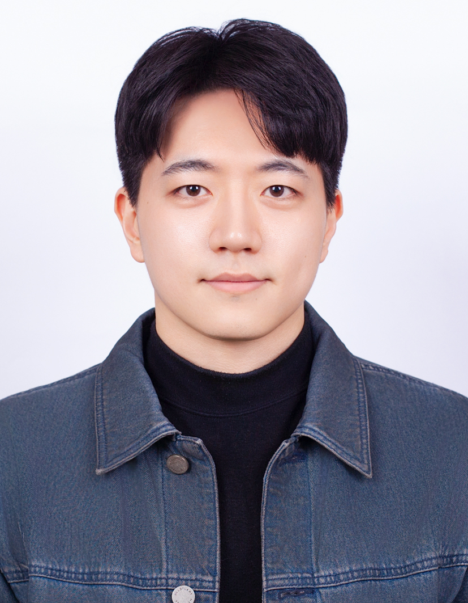

Optical proximity correction
Lithography and patterning for next-generation memory devices, as part of the Flash Process Development Team.
OPCLithographyPatterning
I work on optical proximity correction for next-generation memory, drawing on a background in machine-learned interatomic potentials and computational chemistry.

Staff Engineer at Samsung Electronics, working on memory semiconductor process development in the Semiconductor R&D Center.
I currently work on OPC (Optical Proximity Correction) within the Flash Process Development Team, contributing to advanced lithography and patterning for next-generation memory devices.
My background is in computational chemistry and machine learning applied to engineering problems: ML interatomic potentials, supercritical water reactions, and the dielectric response of liquids.
Lithography and patterning for next-generation memory devices, as part of the Flash Process Development Team.
Developing and validating machine-learned potentials, with uncertainty quantification and robust workflows.
Reaction networks, sampling and rare events in condensed phases, including oxidation in supercritical water.
Connecting molecular structure and dynamics to the dielectric relaxation of liquid water.
Semiconductor R&D Center · Flash Process Development Team · OPC
Scholarship recipient
School of Materials Science and Engineering
Seoul National University · Advisor: Won Bo Lee
Molecular-Level Understanding of Water's Dielectric Relaxation and Supercritical Oxidation Reaction Mechanism via Neural Network Potential
Korea University · Alumni Association Scholarship (Spring 2020)
Chemical and Biological Process Lab
Digital Computer Concept and Practice
Chem. & Bio. Process Lab — Phase equilibrium
Chem. & Bio. Process Lab — Liquid-liquid extraction